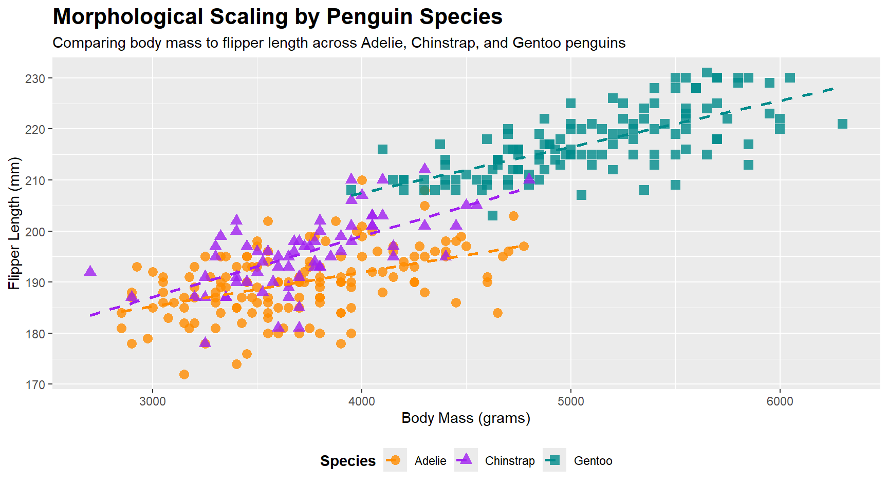
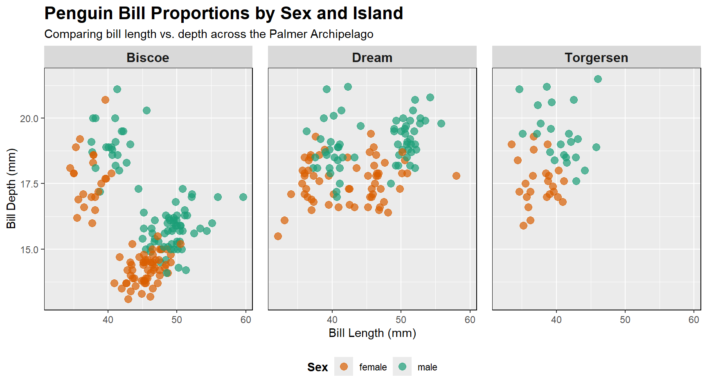

Morphological Variations in Palmer Penguins
INFO 526 - Summer 2026 - Final Project
Motivation: Why Palmer Penguins?
A nostalgic reference for the film Happy Feet initially drew me to studying penguin demographics.
Inspired by Charles Darwin’s widespread studies on finch beak adaptation, I wanted to explore how evolutionary traits manifest in penguin bill dimensions.
The Dataset: Palmer Penguins
Dimensions & Scale
- 344 Observations | 8 Variables
- 3 Species | 3 Islands
Variable Types
- Numerical: Mass, Flipper, Bill Dimensions
- Categorical: Species, Island, Sex
Data Preview
| Chinstrap |
Dream |
55.8 |
19.8 |
207 |
4000 |
male |
| Chinstrap |
Dream |
43.5 |
18.1 |
202 |
3400 |
female |
| Chinstrap |
Dream |
49.6 |
18.2 |
193 |
3775 |
male |
| Chinstrap |
Dream |
50.8 |
19.0 |
210 |
4100 |
male |
| Chinstrap |
Dream |
50.2 |
18.7 |
198 |
3775 |
female |
Question 1: Interspecies Scaling
The Question: How does the relationship between a penguin’s body mass and flipper length differ across the three distinct species?
Goal
Seeking to determine if the physical scaling of body mass in comparison to limb length is consistent across the oberserved findings, or if specific species exhibit unique growth trajectories.
Variables Used
- Numerical Attributes:
body_mass_g (Independent / X-axis)flipper_length_mm (Dependent / Y-axis)
- Categorical Attribute:
species (Grouping / Color & Shape)
Question 2: Geography & Dimorphism
The Question: What is the distribution of bill depths across the three islands, and does this change depending on the sex of the penguin?
Goal
This multivariable approach evaluates “Sexual Dimorphism” (size differences between sexes) and whether these physical traits are influenced by the regional island environment.
Variables Used
- Numerical Attributes:
bill_depth_mm (Primary Metric / Y-axis)bill_length_mm (Contextual Metric / X-axis)
- Categorical Attributes:
island (Geographic Grouping / Facets)sex (Biological Grouping / Color)
Interspecies Scaling Visualization

Geography & Dimorphism Visualization

Conclusion
1. Interspecies Scaling Answer
Universal Correlation: All three species show a strong, positive relationship between body mass and flipper length.
Consistent Trajectories: While Gentoo penguins are physically larger, their slope is closely identical to the Adelie and Chinstrap populations. This suggests a conserved biological scaling across all observed penguins.
2. Geography & Sex Answer
Sexual Dimorphism: It can be seen that male penguins exhibit greater bill depth than females across all study sites.
Regional Isolation: The visual analysis proves that Gentoo penguins live only only Biscoe Island, making its data physically distinct.
3. Overall
Evolution in Action: Similar to Darwin’s finches, these penguin populations show physical adaptations, bill dimensions, that reflect localized ecological niches.
Narrative Over Noise: By prioritizing data storytelling with a clean dataset, 344 rows of raw metrics were translated into a clear, visual narrative about Antarctic biodiversity.